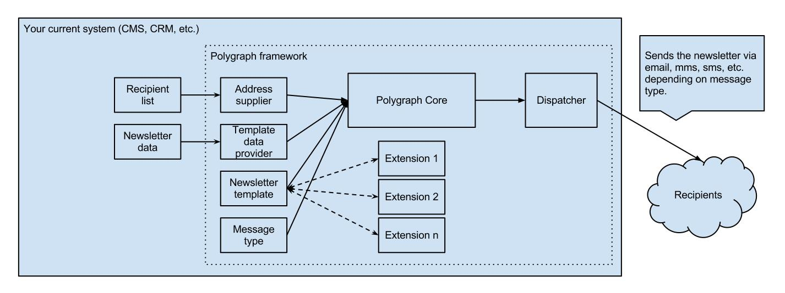

Polygraph - the free bulk messaging framework.
Polygraph is an open source Java famework that allows you to setup, manage and send professional newsletters in various ways and formats to your customers. It uses and requires FreeMarker-Templates
to generate the output. You can use it as standalone solution or embed it into existing systems.
Features:
- Polygraph can be used with many different types of data sources like databases, CSV, XML files. You can easy extend the data sources with your own.
- Powerful open source template engine - FreeMarker gives you the freedom to design your newsletter according to your preferences and allows the faultless presentation of the newsletter in the most popular browsers and email clients.
- Strict separation of the templates and the newsletter data. This does ensure the independent development or modification of the templates and the data. The author of the newsletter does not need to know how templates are developed
and the template developer does not have to take care about the newsletter data.
- It can be easily extended - you can build your own extensions for Polygraph, for example to prepare the newsletter for click tracking or automatically generate the images for it.
- Simple integration in existing CMS, CRM and other systems is possible.
- Various message types like email, sms, mms, ...
Requirements:
- Java environment
- FreeMarker Templates
Integrating the Polygraph framework with your current system

Download
Download at Github